User Guide: IEC60730 Library Integration¶
This document explains how to install required software, add the IEC60730 SDK extension in Simplicity Studio, generate a demo project, configure CRC post-build steps, and integrate library source into an application.
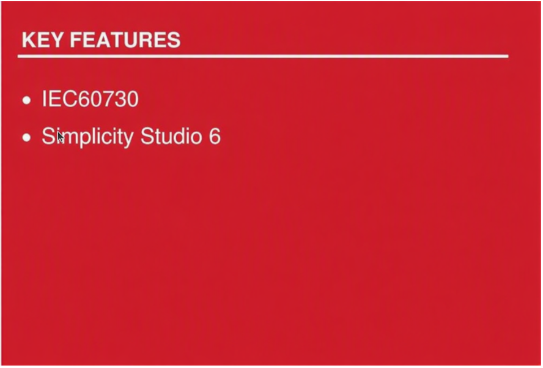
SILICON LABS
Contents¶
2. Install the required software
3. Add an extension to Simplicity Studio
4. Generate an example project
6. Add the source code to the project
7. Integrate code into the project
Table of pictures¶
Figure 1 Adding Extension to SDK
Figure 2 Browse to extension location
Figure 4 Example Project Selection
Figure 5 Target Device Selection
Figure 6 Project Configuration
Figure 7 Project generation in workspace
Figure 9 CRC-16 and CRC-32 scripts
Figure 10 Output command from the Post-build Steps
Figure 11 Result after Post-build complete
Figure 12 Components support library IEC60730
Figure 13 Add source code library IEC60730
Figure 14 Assembly code algorithm MARCHC for GCC compiler
Figure 15 Flow chart of the library IEC60730
Figure 16 Demo OEM files integrated with Library IEC60730
Figure 17 Configuration for watchdog module
Figure 18 Configuration for system clock module
1. Background¶
IEC 60730 is a safety standard used in household appliances. It defines diagnostic methods that help ensure safe device operation. This library provides tests for CPU registers, variable memory, invariable memory, program counter, clock, and interrupts.
At the time of this writing, the IEC60730 Library SDK Extension v2.2.0 has been tested on EFR32BG21 and EFR32BG24 devices using GNU Arm Embedded Toolchain v12.2.1 with both Gecko SDK (GSDK) 4.5.0 and Simplicity SDK (SSDK) 2026.6.0. The runtime library version reported by SL_IEC60730_LIBRARY_VERSION remains 2.0.0; only the SDK Extension package version is 2.2.0.
2. Install the required software¶
Install SRecord to calculate CRC values for Flash images.
- Windows: download the installer from the SRecord site and run it.
- Ubuntu / Debian:
sudo apt update
sudo apt install srecord
3. Add an extension to Simplicity Studio¶
The IEC60730 safety library is delivered as a Simplicity Studio SDK extension. The validated environment is:
- Ubuntu 24.04
- Simplicity Studio 6
- Gecko SDK (GSDK) 4.5.0
- Simplicity SDK (SSDK) 2026.6.0
- GNU Arm Embedded Toolchain v12.2.1
[!NOTE] SLT supports Simplicity SDK (SimSDK) 2026.6.0 clone/setup (
make bootstrap/recipe.toml).Gecko SDK (GSDK) 4.5.0 is maintained on GitHub, so obtain it from the GitHub release, import it in Simplicity Studio, set
GSDK_PATH, or usescript/set_gsdk.sh.
Install Simplicity SDK 2026.6.0 in Studio: after installing Simplicity Studio 6, use PACKAGES > PACKAGE MANAGER > Simplicity SDKs > Add New SDK > Simplicity SDK 2026.6.0.
Install Gecko SDK 4.5.0 in Studio: download from the Gecko SDK v4.5.0 release, then import it with SETTINGS > SDKs > Add SDK.
To add the IEC60730 extension: SETTINGS > SDKs > <selected SDK> > Add Extension.
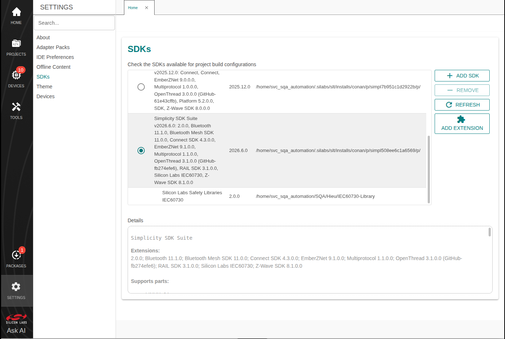
Figure 1 Adding Extension to SDK¶
Press Browse to find the directory of this extension. Then choose the folder that has the file name iec60730.slce. Simplicity Studio will detect SDK extensions automatically. Click OK then Apply and Close
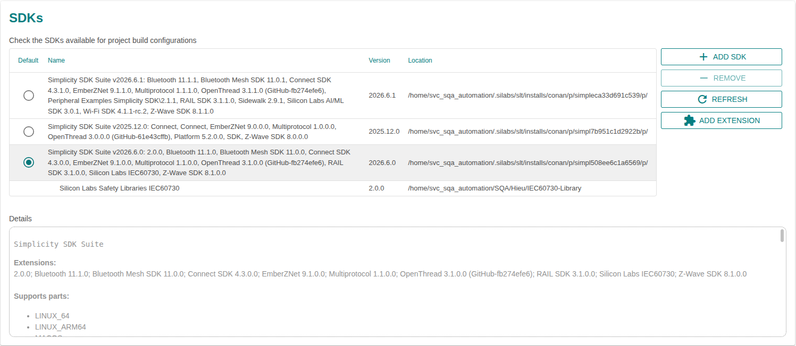
Figure 2 Browse to extension location¶
4. Generate an example project¶
Before generating a project in Simplicity Studio, confirm that the IEC60730 extension has been added to the selected SDK.
This extension provides demo projects for EFR32BG21 and EFR32BG24 on both Gecko SDK (GSDK) 4.5.0 and Simplicity SDK (SSDK) 2026.6.0.
If you are working from this repository, apply the matching SDK profile before generating the project.
The committed default is ssdk_2026_6.
make apply-sdk-profile PROFILE=ssdk_2026_6
# or
make apply-sdk-profile PROFILE=gecko_4_5
[!IMPORTANT] Profile apply overwrites tracked repository files from
sdk_profiles/<profile>/snapshots (not git diffs) and clears generated build dirs. Use it for local build/Studio prep; restorePROFILE=ssdk_2026_6before committing unless you intentionally change the default. See the repository README — Dual SDK support.
The project-generation workflow is the same for both devices and both supported SDKs:
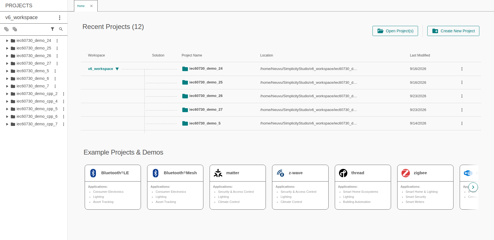
Figure 3 Create new project¶
To create a new Simplicity Studio® 6 (SSv6) project, follow these three dialog steps:
-
Target, SDK, and Toolchain
-
Examples
-
Configuration
An indicator at the top of the dialog will show you your current position in the process. You can click Back at any time to return to a previous dialog if you need to make changes.
In Example Project Selection, use the checkboxes or keywords to find the example of interest. To create a radio board example IEC60730 Demo, search the keyword iec60730 in the search box, related examples will show. Choose IEC60730 Example Demo. Click create
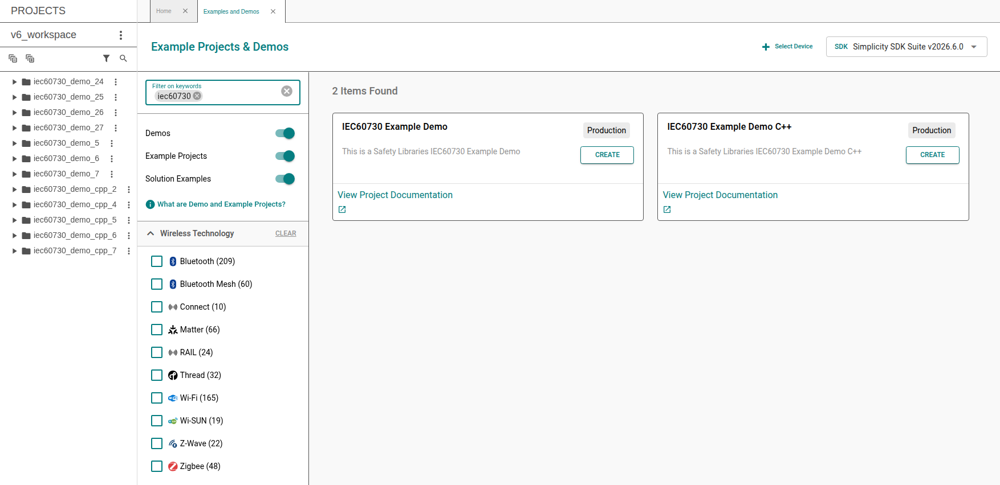
Figure 4 Example Project Selection¶
In Target Device, select the target device for the project. For this example, choose EFR32BG24A010F1024IM40, then click Next. The same steps apply to BRD4264C or EFR32BG21A010F1024IM32.
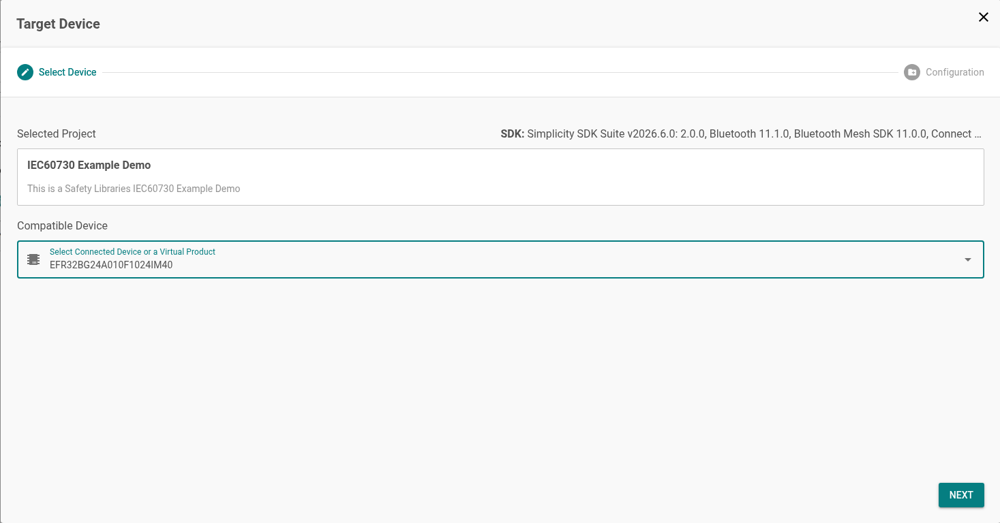
Figure 5 Target Device Selection¶
In Project Configuration Selection, rename your project and choose its location if you want. For the three selections under Copy contents, you can choose any of the selections you want.
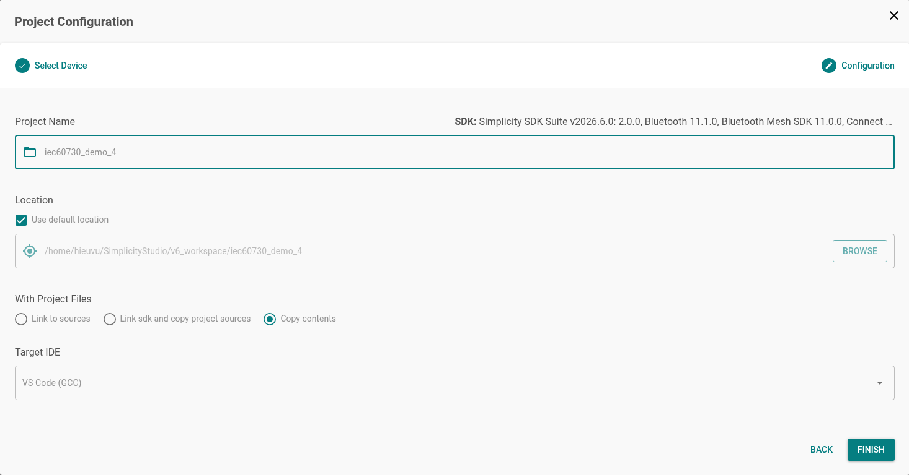
Figure 6 Project Configuration¶
Once you finish project creation, the Simplicity IDE perspective opens. There may be a slight delay in the initial configuration.
The project typically opens README tab, which contains an example project description, and OVERVIEW tab.
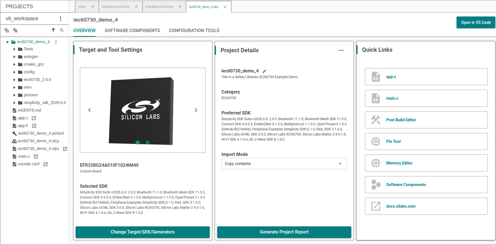
Figure 7 Project generation in workspace¶
For building the project, select Open in VS Code to synchronize the project with Visual Studio Code. Then, open the Extensions view in VS Code and install the Simplicity Studio for VS Code extension. After installation, click the hammer icon to build the project, or right-click the project and select Build Project.
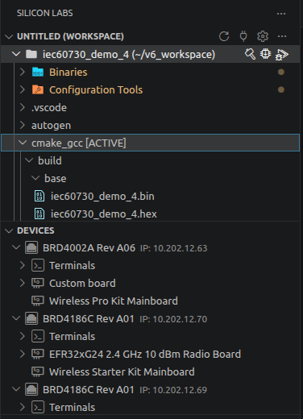
Figure 8 Build Project¶
5. Edit the post-build steps¶
By default, after building the project, firmware files in *.bin, *.hex, and *.s37 formats will be created.
Modify the post-build steps so new firmware images are generated with a CRC value written into FLASH at the check_sum symbol. Scripts sl_iec60730_cal_crc16.sh and sl_iec60730_cal_crc32.sh produce *_crc16 / *_crc32 images (documented generically as *_crcNN). They run on Windows and Ubuntu and live under iec60730_<version>/lib/crc/.
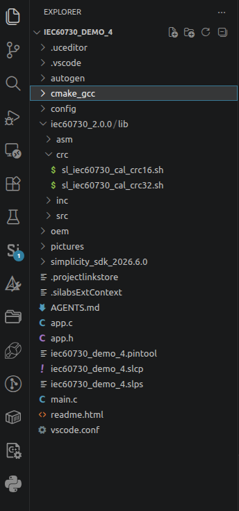
Figure 9 CRC-16 and CRC-32 scripts¶
Detailed parameters are described in Support calculate CRC.
Important — customer notice (CRC-16 production path)
When
SL_IEC60730_CRC_DEBUG_ENABLEis disabled (0) andSL_IEC60730_USE_CRC_32_ENABLEis disabled (0) (default CRC-16 mode inconfig/sl_iec60730_config.h):
- The post-build step must run
sl_iec60730_cal_crc16.shso a*_crc16image is generated with the reference CRC stored atcheck_sum.- You must flash the
*_crc16firmware (*.bin/*.hex/*.s37), not the plain image without the CRC suffix.The address list passed to the script must match the Flash regions used at runtime in OEM IMC configuration (for example in
oem_iec60730.c). Otherwise runtimeiec60730_ref_crcand storedSL_IEC60730_REF_CRC(check_sum) will differ and IMC POST/BIST will fail.If
SL_IEC60730_USE_CRC_32_ENABLEis enabled (1), usesl_iec60730_cal_crc32.shand flash*_crc32instead.- If
SL_IEC60730_CRC_DEBUG_ENABLEis enabled (1), IMC compares against the runtime-calculated reference and does not require a matching storedcheck_sum; the CRC post-build image is still recommended for production builds.
Studio-style example (GCC)¶
Single continuous region (start address to check_sum):
arm-none-eabi-objdump -t -h -d -S '${BuildArtifactFileBaseName}.axf' >'${BuildArtifactFileBaseName}.lst' && bash ${ProjDirPath}/iec60730_2.2.0/lib/crc/sl_iec60730_cal_crc16.sh ${BuildArtifactFileBaseName} "<path_build_dir>" "<path_srecord_bin>" GCC "0x8000000"
Multiple regions (must match OEM Flash IMC regions; demo GCC offsets example):
arm-none-eabi-objdump -t -h -d -S '${BuildArtifactFileBaseName}.axf' >'${BuildArtifactFileBaseName}.lst' && bash ${ProjDirPath}/iec60730_2.2.0/lib/crc/sl_iec60730_cal_crc16.sh ${BuildArtifactFileBaseName} "<path_build_dir>" "<path_srecord_bin>" GCC "0x8000000 0x8000050 0x80000a0 0x80000f0 0x8000140 0x8000190"
These six addresses are three start/end pairs. They come from the demo OEM table in oem_iec60730.c (OEM_FLASH_OFFSET = 20 words → 0x50 bytes per region, with one-region gaps). See Section 7.2 for the OEM code to modify and why multiple regions are used.
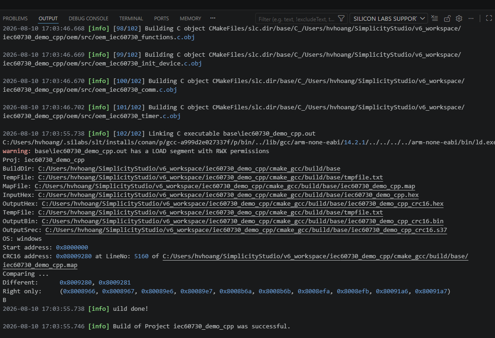
Figure 10 Output command from the Post-build Steps¶
Add post-build CRC (CMake)¶
Apply CRC post-build in cmake_gcc/CMakeLists.txt. Append to the existing POST_BUILD (after .s37 / .hex / .bin). Do not wrap the CRC invocation in bash -c "..." — nested quotes break under Windows cmd.exe. On Windows, bash must be available (MSYS / MinGW / Cygwin / Git Bash).
Example for CRC-16 (SL_IEC60730_USE_CRC_32_ENABLE disabled), multi-region list aligned with the demo OEM Flash IMC regions:
add_custom_command(TARGET iec60730_demo
POST_BUILD
COMMAND ${CMAKE_OBJCOPY} ${OBJCOPY_SREC_CMD} "$<TARGET_FILE:iec60730_demo>" "$<TARGET_FILE_DIR:iec60730_demo>/$<TARGET_FILE_BASE_NAME:iec60730_demo>.s37"
COMMAND ${CMAKE_OBJCOPY} ${OBJCOPY_IHEX_CMD} "$<TARGET_FILE:iec60730_demo>" "$<TARGET_FILE_DIR:iec60730_demo>/$<TARGET_FILE_BASE_NAME:iec60730_demo>.hex"
COMMAND ${CMAKE_OBJCOPY} ${OBJCOPY_BIN_CMD} "$<TARGET_FILE:iec60730_demo>" "$<TARGET_FILE_DIR:iec60730_demo>/$<TARGET_FILE_BASE_NAME:iec60730_demo>.bin"
# .lst + CRC-16 (*_crc16.bin/hex/s37). Use bash on Windows (MSYS/MinGW/Cygwin).
COMMAND ${CMAKE_OBJDUMP} -t -h -d -S "$<TARGET_FILE:iec60730_demo>" > "$<TARGET_FILE_DIR:iec60730_demo>/$<TARGET_FILE_BASE_NAME:iec60730_demo>.lst"
COMMAND bash "${CMAKE_CURRENT_LIST_DIR}/../iec60730_2.2.0/lib/crc/sl_iec60730_cal_crc16.sh"
"$<TARGET_FILE_BASE_NAME:iec60730_demo>"
"$<TARGET_FILE_DIR:iec60730_demo>"
"C:/Program Files/srecord/bin"
GCC
"0x8000000 0x8000050 0x80000a0 0x80000f0 0x8000140 0x8000190"
)
For a single continuous Flash range, replace the last argument with "0x8000000" and set OEM IMC to one region from SL_IEC60730_ROM_START to SL_IEC60730_ROM_END.
Use sl_iec60730_cal_crc32.sh when SL_IEC60730_USE_CRC_32_ENABLE is enabled. On Linux, pass "" for the srecord path field. After a successful post-build, flash *_crc16.* or *_crc32.*, not the plain image.
Note
Required when
SL_IEC60730_CRC_DEBUG_ENABLEis0andSL_IEC60730_USE_CRC_32_ENABLEis0: runsl_iec60730_cal_crc16.shin post-build and flash<project_name>_crc16(*.bin/*.hex/*.s37). The plain image does not contain a valid reference CRC atcheck_sum, so IMC will fail.Keep the script address list identical to the Flash regions configured for IMC in your OEM code.
If, during project configuration, you choose Link to SDK and Copy Project Structures or Link to Source, copy
sl_iec60730_cal_crc16.shorsl_iec60730_cal_crc32.shinto thelib/crcfolder of your project directory (or point the CMake path atiec60730_<version>/lib/crc/).After the build completes, Post-build creates
<project_name>_crc16or<project_name>_crc32files with extensions*.bin,*.hex, and*.s37.
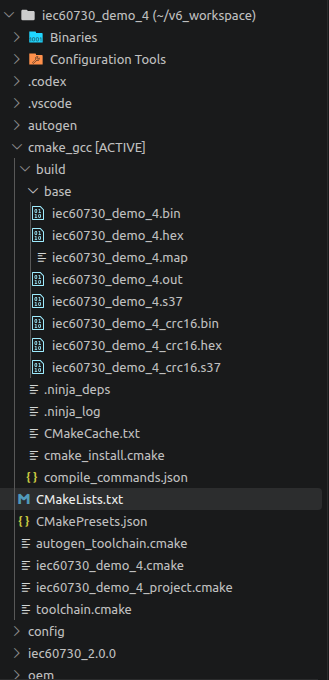
Figure 11 Result after Post-build complete¶
6. Add the source code to the project¶
After the SDK extension is added, Simplicity Studio exposes components that add IEC60730 library sources (*.c, *.s) to the project:
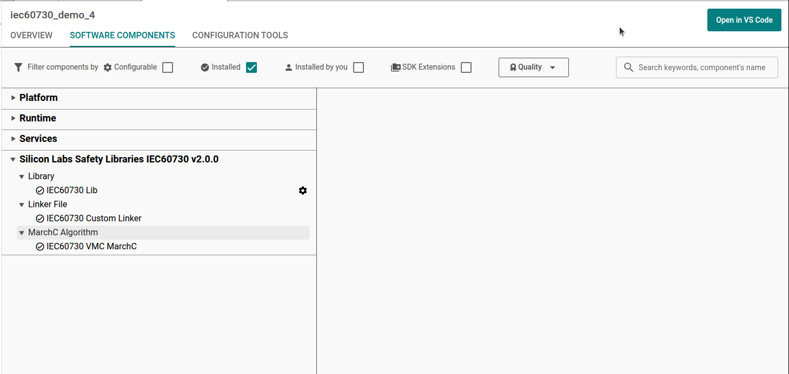
Figure 12 Components support library IEC60730¶
When you install these components, the source code library IEC60730 will be added. For example:
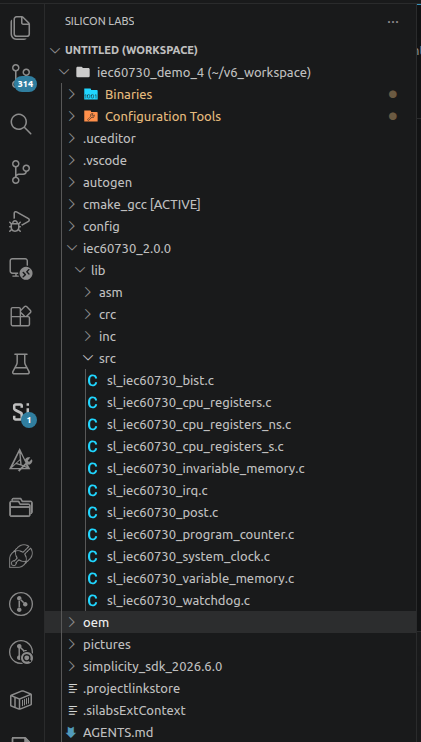
Figure 13 Add source code library IEC60730¶
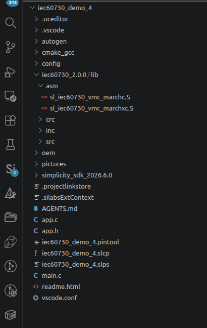
Figure 14 Assembly code algorithm MARCHC for GCC compiler¶
7. Integrate code into the project¶
The IEC60730 library has two main test phases: Power-On Self-Test (POST) and Built-In Self-Test (BIST). Figure 15 shows the basic integration flow in an application.
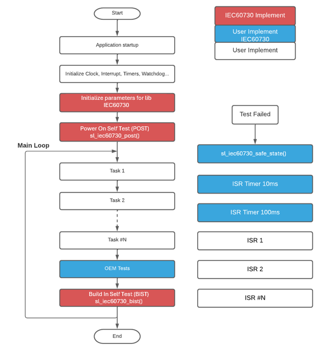
Figure 15 Flow chart of the library IEC60730¶
The demo provides an oem folder (Original Equipment Manufacturer glue code) that integrates with the library according to that flow.
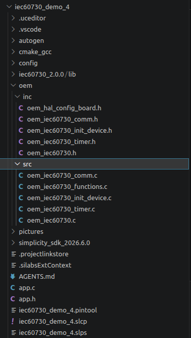
Figure 16 Demo OEM files integrated with Library IEC60730¶
To use your own OEM code instead of the demo files, follow the steps below.
1. Declare and initialize IEC60730 variables¶
Refer to oem_iec60730_init in oem_iec60730.c.
sl_iec60730_vmc_test_multiple_regions_t oem_vmc_test;
sl_iec60730_imc_test_multiple_regions_t oem_imc_test __CLASSB_RAM;
sl_iec60730_irq_cfg_t oem_irq_config;
These three variables are used for interrupt, invariable memory check and variable memory check.
2. To perform an invariable memory check, configure OEM Flash regions (must match post-build CRC script)¶
The IEC60730 library uses CRC for Flash (IMC). CRC can use GPCRC hardware or software via:
#define SL_IEC60730_CRC_USE_SW_ENABLE
If hardware CRC is used, initialize GPCRC before the Flash test.
The library supports two methods:
- Single continuous region: from a Flash start address to
check_sum(SL_IEC60730_ROM_END). - Multiple discontinuous regions: start/end pairs for each area to protect (gaps between regions are not included in the CRC).
Why the demo uses multiple regions¶
The demo configures three Flash regions (not the full image) to show how IMC can protect selected Flash ranges when code or data is split (for example several application/image sections with unused gaps between them). That matches the multi-region capability described in the IMC library documentation.
In the demo, OEM_FLASH_OFFSET is counted in uint32_t pointer units. For GCC, OEM_FLASH_OFFSET = 20 → each region is 20 × 4 = 80 bytes (0x50). Regions are placed with a one-region gap between them so the CRC deliberately skips the hole:
| Region | Start | End (exclusive) | Size |
|---|---|---|---|
| 0 | 0x08000000 |
0x08000050 |
0x50 |
| 1 | 0x080000A0 |
0x080000F0 |
0x50 |
| 2 | 0x08000140 |
0x08000190 |
0x50 |
Gaps 0x08000050–0x080000A0 and 0x080000F0–0x08000140 are not CRC’d. The post-build address list is therefore:
0x8000000 0x8000050 0x80000a0 0x80000f0 0x8000140 0x8000190
(start0 end0 start1 end1 start2 end2).
OEM code you must modify — oem/src/oem_iec60730.c¶
Highlight and edit these symbols so runtime IMC matches your product Flash map and Section 5 post-build script arguments:
/* --- MODIFY: number of Flash IMC regions --- */
#define OEM_NUM_FLASH_REGIONS_CHECK 3
#if defined(__GNUC__)
/* --- MODIFY: region size in uint32_t words (20 words = 0x50 bytes) --- */
#define OEM_FLASH_OFFSET 20
#elif defined(__ICCARM__)
#define OEM_FLASH_OFFSET 80 /* IAR demo uses byte offsets in casts below */
#endif
#if defined(__GNUC__)
/* --- MODIFY: Flash IMC regions (must match CRC script address list) --- */
const sl_iec60730_imc_test_region_t oem_imc_region_test[OEM_NUM_FLASH_REGIONS_CHECK] =
{ { .start = SL_IEC60730_ROM_START, .end = SL_IEC60730_ROM_START + OEM_FLASH_OFFSET },
{ .start = SL_IEC60730_ROM_START + 2 * OEM_FLASH_OFFSET, .end = SL_IEC60730_ROM_START + 3 * OEM_FLASH_OFFSET },
{ .start = SL_IEC60730_ROM_START + 4 * OEM_FLASH_OFFSET, .end = SL_IEC60730_ROM_START + 5 * OEM_FLASH_OFFSET } };
#endif
Wire the table in oem_iec60730_init():
oem_imc_param.gpcrc = SL_IEC60730_DEFAULT_GPRC;
oem_imc_test.region = oem_imc_region_test;
oem_imc_test.number_of_test_regions = OEM_NUM_FLASH_REGIONS_CHECK;
sl_iec60730_imc_init(&oem_imc_param, &oem_imc_test);
Single continuous region alternative (script argument "0x8000000" only):
#define OEM_NUM_FLASH_REGIONS_CHECK 1
const sl_iec60730_imc_test_region_t oem_imc_region_test[OEM_NUM_FLASH_REGIONS_CHECK] =
{ { .start = SL_IEC60730_ROM_START, .end = SL_IEC60730_ROM_END } };
The reference CRC is written at check_sum by the post-build script (Section 5). Flash the *_crc16 / *_crc32 image so runtime IMC can compare against SL_IEC60730_REF_CRC.
3. Configure watchdog testing¶
These settings select which watchdog units are checked. The library does not initialize the watchdog hardware; the application must do that.
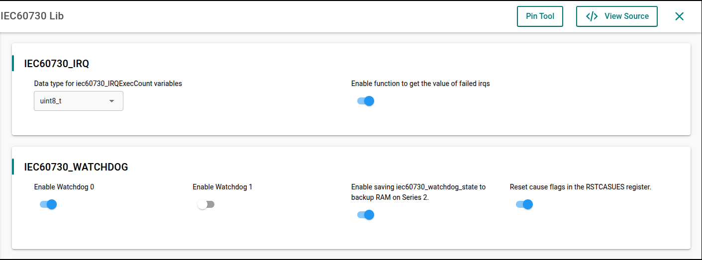
Figure 17 Configuration for watchdog module¶
Enable watchdog testing with:
#define SL_IEC60730_WDOG0_ENABLE
#define SL_IEC60730_WDOG1_ENABLE
If neither macro is enabled, the build reports that watchdog checking is not enabled.
- To clear reset-cause flags in the
RSTCAUSESregister after watchdog testing completes, enable#define SL_IEC60730_RSTCAUSES_CLEAR_ENABLE(enabled in the demo). - Place the static variable
iec60730_watchdog_countin a section that survives startup, for example.ram_no_clear. - Place the global variable
iec60730_watchdog_statein.ram_no_clearas well. On Series 2 devices, enable#define SL_IEC60730_SAVE_STAGE_ENABLEto storeiec60730_watchdog_statein backup RAM (disabled by default). Select the BURAM register withSL_IEC60730_BURAM_IDX(default0x0UL).
4. Steps required before calling sl_iec60730_post¶
- Configure clocks for the timers. See
oem_iec60730_init_device.cin the demo. - Create two timers with recommended 10 ms and 100 ms interrupt periods to exercise the clock and clock-switch checks. See
oem_iec60730_timer.c. If you change those periods, also update the relatedIEC60730_SYS_CLKconfiguration:
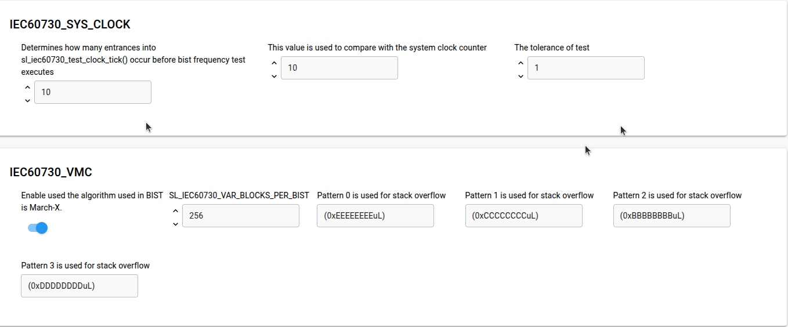
Figure 18 Configuration for system clock module¶
5. Variable memory check¶
The library uses MarchC and MarchXC algorithms and supports:
- A single RAM region from a user-specified start address to the end of RAM
- Multiple RAM regions defined by start/end address pairs
See oem_iec60730.c for details.
6. Program-counter flags before sl_iec60730_bist¶
Before calling sl_iec60730_bist, update sl_iec60730_program_counter_check. The library sets some flags itself, including IEC60730_VMC_COMPLETE, IEC60730_IMC_COMPLETE, IEC60730_CPU_CLOCKS_COMPLETE, and IEC60730_INTERRUPT_COMPLETE.
Other flags (IEC60730_GPIO_COMPLETE, IEC60730_ANALOG_COMPLETE, and similar) must be set by application-specific tests. For checks you do not implement, still set the corresponding complete flags so the program-counter check can pass.
Typical demo pattern:
sl_iec60730_program_counter_check |= IEC60730_GPIO_COMPLETE
| IEC60730_ANALOG_COMPLETE
| IEC60730_OEM0_COMPLETE
| IEC60730_OEM1_COMPLETE
| IEC60730_OEM2_COMPLETE
| IEC60730_OEM3_COMPLETE
| IEC60730_OEM4_COMPLETE
| IEC60730_OEM5_COMPLETE
| IEC60730_OEM6_COMPLETE
| IEC60730_OEM7_COMPLETE;
- The demo communications test sets
IEC60730_COMMS_COMPLETEitself. - Call
sl_iec60730_bistfrom a periodic task or from a mainwhile (1)loop.
7. Increment IRQ counters¶
Increment the IRQ counter each time the monitored interrupt fires. See oem_irq_exec_count_tick in the demo:
void TIMER0_IRQHandler(void)
{
/* ... */
oem_irq_exec_count_tick();
}
void oem_irq_exec_count_tick(void)
{
oem_irq_exec_count[0]++;
}
8. Implement sl_iec60730_safe_state¶
Implement sl_iec60730_safe_state to handle detected faults. See oem_iec60730_functions.c for a reference. After generating the demo, you can add application logic in app.c / app.h.
8. Revision history¶
| Revision | Date | Description |
|---|---|---|
| 0.1.0 | Oct 2021 | Initial Revision |
| 0.2.0 | Nov 2021 | Section 7: Added description for Watchdog |
| 0.3.0 | Mar 2023 | Remove Section 8. |
| 0.4.0 | Apr 2023 | Update document |
| 1.0.0 | Sep 2023 | Section 1: Added mention aboutEFM32PG22 and EFR32xG22devices. |
| 1.1.0 | June 2024 | Adding Section 3 and Section 4 for support creates a Library Extension Updated other sections for suit with the released package EFR32xG12 and EFR32xG24 devices. |
| 2.0.0 | Nov 2024 | Rewrite the documentation by the re-factory code of the library support device EFR32MG families. |
| 2.1.0 | Aug 2026 | Update the documentation to reflect the extension configuration changes that add support for the EFR32FG23 device family. |
| 2.2.0 | Sep 2026 | SDK Extension packaging release (library runtime version remains 2.0.0). Support for EFR32BG21 and EFR32BG24 devices. Added dual SDK support for Gecko SDK (GSDK) 4.5.0 and Simplicity SDK (SSDK) 2026.6.0. Added SDK profile switching, unit test, and integration test support. Documented that SLT provides Simplicity SDK 2026.6.0 clone/setup, while GSDK 4.5.0 is maintained on GitHub and resolved separately. |